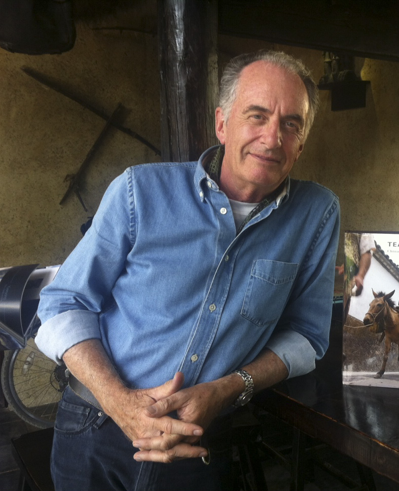

News and updates
March 31, 2022
- Results of the final leaderboard is published here
- The password for the final leaderboard is published here
- IMPORTANT! The deadline for the final submission has been moved by 12 hours to 23 March 11:59 (GMT).
- The comments of the professional photographer on the results of the second validation set have been published.
- The people's choice and the professional photographer's choice for the results of the second validation set have been published.
- The deadline for the final submission has been moved to March 22.
- The leaderboard based on the results submitted until March 2, 23:59 (GMT) as well as the password required to decrypt the archive with the images will be available on the second leaderboard page.
- The leaderboard based on the photographer's opinion as well as its explanation in more detail is now available on the leaderboard page.
- The leaderboard based on the Toloka platform comparisons is now available on the leaderboard page.
- The information on how to access the validation dataset has been sent to the participants' e-mails.
- Additional information is available on the leaderboard page.
Motivation for this challenge
Cameras apply onboard processing to render RAW sensor images to the final photo-finished image encoded in a standard color space (e.g., sRGB). Images captured at night present unique challenges that are not typical in most daytime images. For example, it is often sufficient to assume a single global illumination in daytime images, while night images often have multiple illuminants, many of which are visible in the scene. The unique lighting environment present in night photography makes it unclear the best illumination correction to use for night image rendering. In addition, tone curves and similar photo-finishing strategies used to process daytime images may not be appropriate for night photography. Moreover, common image metrics (e.g., SSIM and LPIPS) may not be suitable for night images. Finally, there is significantly less published research focused on image processing for night photography. As a result, there are fewer "best practices" for processing night images. Encouraging research targeting night photography is the main motivation for this challenge.
Challenge Goal and Uniqueness
Given the nature of our challenge, we do not have ground truth images. Our challenge involves developing a rendering procedure that produces "visually pleasing" photographs over a wide range of night images. As a result, submissions will be judged using mean opinion scores from observers asked to compare and rank the submissions based on their visual appearance. A professional photographer will further judge top solutions.
Challenge data
The participants will be given access to raw-RGB images of night scenes. These images have been captured using the same sensor type and are encoded in 16-bit PNG files with additional meta-data provided in JSON files.
The challenge will start with an initial 50 images provided to participants for algorithm development and testing. Data will be available after registration; see the form at the bottom of the page. Additional images will be made available during the challenge; see information below on evaluation and leaderboard below.
As extra data, you can use the Cube++ dataset, which was collected using the same cameras. The dataset is described in this article and can be downloaded from here.
Also we have provided code for the baseline algorithm and its demo on GitHub.
Evaluation/Leadersboard
The current leaderboard is available HERE.
The evaluation will consist of two validation checkpoints during the contest and one final checkpoint at the very end of the contest. Note that only the final checkpoint is mandatory – the validation checkpoints are optional. This means that new participants can join at any time before the final submission deadline, as long as they fulfill other challenge requirements.
For the validation and final checkpoints, mean opinion scores will be obtained through visual comparison carried out using Toloka (similar to Mechanical Turk). Toloka users will rank their preferred solutions in a forced-choice manner. Note that Toloka will mainly rely on observers from Eastern Europe and Russia to perform the image ranking. As a result, there may be a cultural bias in terms of the preferred image aesthetics by the observers. Note that Toloka users will not know the identity of the participants. Example of this evaluation is available here.
The results obtained during the validation checkpoints will provide feedback to challenge teams on their solutions' quality. During each validation checkpoint, 50 new test images will be given. Each participating team will be able to send up to two distinct solution image sets (i.e., you can test out two different algorithms for feedback). Each of these solution sets should consist of exactly 50 images: one solution image per test image. Having two validation sets is intended to help participants test the behavior of different solutions.
For the final submission, 100 test images will be made available. Only a single solution image set for the 100 test images will be allowed for the final submission. Among these 100 images, only 50 images will be used for further evaluation. The indices of the selected images will be the same for all participants and given in advance in an encrypted form, with the password being given only after the contest. Additionally, during the final checkpoint, the submitted solutions ranked among the top-10 based on the Toloka scores – and that have results reproducible by the provided Docker image (submission example will be provided) – will proceed to the professional judgment stage. In this final stage, a professional photographer will provide his selection for the final winners and he will also be asked to provide feedback on his decision.
During the solution submission, the participants will have the option to make their Docker container open, i.e., publicly available after the challenge. Doing so will be a prerequisite to be eligible for money prizes that are described later. Nevertheless, even if the participants choose to keep their Docker container closed, they will still be eligible for winner certificates should they win one of the first three places, while the money prize will be passed on.
Finally, we ask challenge participants to be mindful that this challenge relies on evaluations is subjective in nature. We are designing the challenge to be as fair as possible, given the nature of the task. The challenge organizers reserve the right to modify the evaluation procedures as necessary to improve the challenge.
Submissions
As mentioned above, for each evaluation check point, users will be allowed to submit 50 images in JPEG format (high-quality compression). Each team can submit at most two solutions. Submissions will be available via Google form, which will be sent to registered teams.
We expect images of size 1300x866 for landscape orientation and 866x1300 for portrait one, in other cases we will rescale them automatically using simple linear methods. You can see an example of an expected JPG file in folder data on challenge repository.
For the final evaluation, a submission will have to contain 100 processed images in the JPEG format, as well as a Docker container with the runnable solutions for reproducing the submitted results. Among these 100 images, only 50 images will be used for further evaluation. The indices of the selected images will be the same for all participants and given in advance in an encrypted form, with the password being given only after the contest. Note that for the preliminary and final submission according to Google policy, you will need to have a Google account.
Timeline
| Early February: | Start of the competition |
| 15 February: | First leaderboard |
| Second leaderboard | |
| Final submission |
* Please note that the timeline can be slightly changed, so it is advised to check the challenge web page over time.
Reporting
In order to be eligible for the prizes, the participants will be required to send code and reports about their solutions in the form of short papers during the submission. If this report is not submitted, the participants that would otherwise win a prize will be passed over.Prizes
Winners will receive a winner certificate and will have an opportunity to submit their paper to NTIRE'2022 and participate in the common report which also will be submitted to CVPR workshop. Also winners will be awarded with money prize:
Photographer's choice
| First place | $1000 | |
| Second place | $650 | |
| Third place | $350 |
People's choice
| First place | $1000 | |
| Second place | $650 | |
| Third place | $350 |
The photographer
MICHAEL FREEMAN, with an MA in Geography from Oxford University, is one of the world's most widely published photographers, and is the world's leading author on the practice of photography, with more than 4 million copies sold.
In a career spanning five decades, and a range of work that includes both documentary reportage, studio and architecture, he has been published in almost all major publications worldwide, including Time-Life, GEO and a three-decade relationship with the Smithsonian magazine, for whom he has shot more than 40 stories. He has published 155 books, 78 of them on photography, including the seminal title on composition, The Photographer's Eye, in 28 languages.
He also wrote the degree course on photography for the UK's Open College of the Arts, and has awards for his educational work, including the Prix Louis Philippe Clerc from the Musée Française de la Photographie in Bièvres, France, and Top Author Award in China. He was consultant for, and appeared in, a BBC Television series on photography, and has been a judge on many photographic competitions, including the Nikon Press Award. He speaks regularly at a wide range of institutions, including the Royal Geographical Society, the Smithsonian, Asia House, the Hay Literary Festival, Emirates Literary Festival, Beijing University, the China Central Academy of Fine Arts, Beijing Film Academy and Tsinghua University. He is also a consultant for leading camera and software manufacturers.
For more information, please visit this website, and Instagram.
Q&A
If you still have any questions, please send an email: nightphotochallenge@gmail.com
Organizers
- Egor Ershov
- Denis Shepelev
- Vasily Tesalin
- Alex Savchik
- Arseniy Terekhin
- Dmitry Bocharov
- Illya Semenkov
- Nikola Banić
- Karlo Koščević
- Marko Subašić
- Sven Lončarić
- Michael S. Brown
- Radu Timofte
Sponsorship